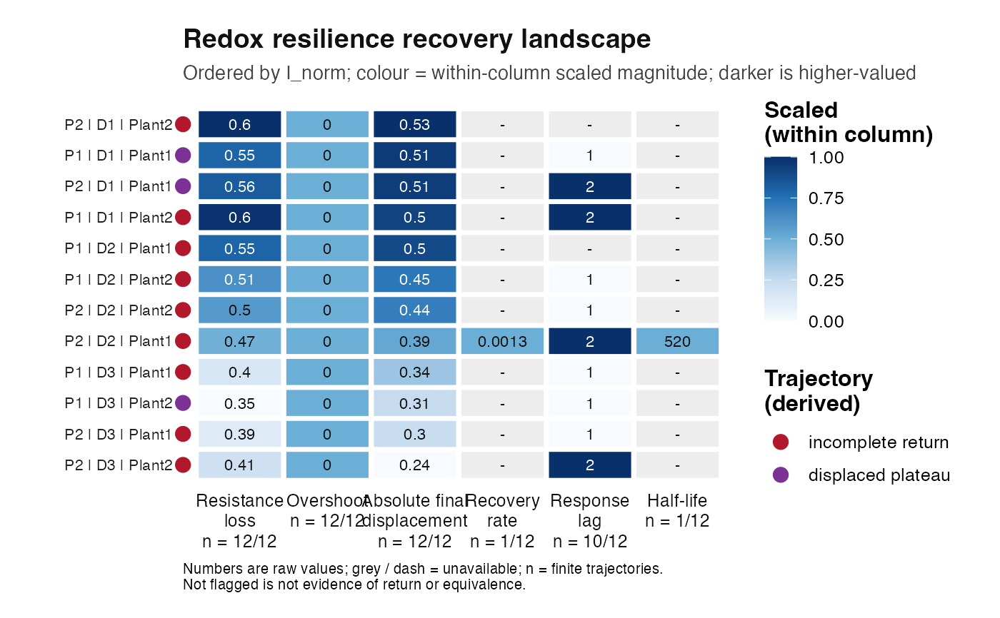

R/plot_rri_recovery_landscape.R
plot_rri_recovery_landscape.RdVisualises trajectory-level recovery metrics from rri_recovery_metrics().
Each row is one trajectory and each column one recovery signature. Cell
colour encodes the within-column scaled magnitude; the printed number is
always the unscaled value, so nothing is hidden by the scaling.
A data frame returned by rri_recovery_metrics().
Character vector of columns identifying one trajectory.
Character vector of recovery metric columns to plot. Defaults
to the columns returned by rri_recovery_metrics(). Legacy names
(A_norm, O_norm, tau_r) are still labelled if supplied.
Character scalar. Metric used to order trajectories.
Controls what darker colour means. "concern"
inverts metrics for which a smaller value is the more concerning
outcome. This is a descriptive polarity convention, not a shared scale of
ecological concern; overshoot remains neutral. "raw" (default) scales every column upward, meaning dark is high-valued
regardless of interpretation. See Details.
Logical. Drop metric columns that are NA for every
trajectory rather than drawing a blank column. k and t_half are NA
unless a recovery rate was fitted, so an all-NA column is common and
means "not estimable here", not "zero".
Numeric. Base font size.
A ggplot object.
Why orientation matters. The recovery signatures do not share a polarity.
A large depth_min_frac (deep decline), a large tau_lag (slow onset) and a
large t_half (slow return) are all unfavourable, but a large k is a
fast recovery rate and therefore favourable. Scaling every column upward
and applying one colour ramp would make dark mean "bad" in some columns and
"good" in others. With orient = "concern" the k column is inverted before
scaling so the ramp is interpretable across the panel. overshoot_frac is
treated as neutral and never inverted, because overshoot is not
unambiguously favourable or unfavourable.
Scaling is min-max within each column, within this cohort. A dark cell means "high relative to the other trajectories in this run", not high in any absolute sense. Two datasets cannot be compared cell by cell.
If rec has no trajectory_class column, one is derived from
displaced_plateau_flag and incomplete_return_frac. The derived labels
describe the score trajectory only and identify no mechanism. A negative
final displacement below -0.10 is labelled incomplete return; otherwise a
finite displacement is labelled not flagged, not evidence of equivalence.
All-missing columns are retained by default. Counts report finite values;
grey cells remain missing even in constant-valued columns. I_norm is the
capped absolute final displacement and does not encode its direction.
sim <- simulate_redox_holobiont(
n_plot = 2,
n_depth = 3,
n_plant = 2,
n_time = 12,
p_micro = 20,
seed = 109
)
res <- suppressWarnings(rri_pipeline_st(
ROS_flux = sim$ROS_flux,
Eh_stability = sim$Eh_stability,
micro_data = sim$micro_data,
id = sim$id,
reducer = "per_domain",
scaling = "pnorm"
))
rec <- rri_recovery_metrics(
res = res,
id = sim$id,
time_col = "time",
group_cols = c("plot", "depth", "plant_id"),
perturb_start = 5,
perturb_end = 7
)
plot_rri_recovery_landscape(
rec,
metrics = c("depth_min_frac", "overshoot_frac", "I_norm",
"k", "tau_lag", "t_half")
)
#> `trajectory_class` not supplied; derived from displaced_plateau_flag and incomplete_return_frac.
